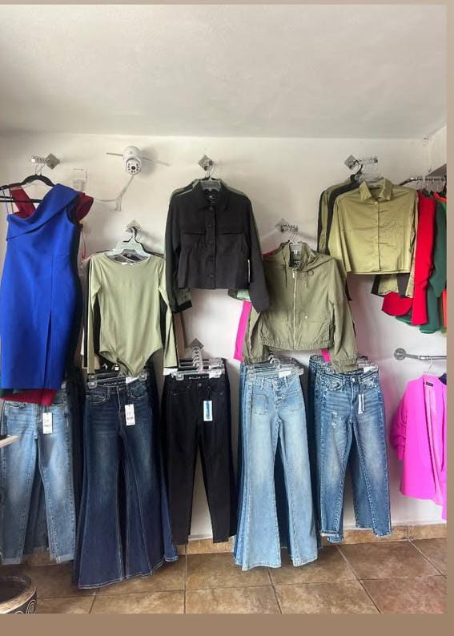

Nuestra Historia
Fundada por una mujer emprendedora y con muchas ganas de salir adelante en su negocio, una apasionada diseñadora de moda, Capricho nació con la visión de ofrecer prendas femeninas que no solo siguieran las tendencias actuales, sino que también celebraran la identidad y tradiciones de las mujeres de Amealco. Ubicada en la Plaza Juárez, un lugar emblemático del centro del municipio, la boutique se inspira en la belleza natural y cultural que rodea a la comunidad.
Más allá de ser una tienda de ropa, Capricho se ha convertido en un espacio cultural en Amealco. La boutique organiza talleres de bordado, exposiciones de arte local y eventos que promueven la cultura otomí. Estas actividades permiten a las mujeres de la región aprender nuevas habilidades, compartir sus historias y fortalecer los lazos comunitarios.
La Plaza Juárez, donde se ubica Capricho, es un punto de encuentro para locales y visitantes. Rodeada de cafés, restaurantes y tiendas de artesanías, la plaza ofrece un ambiente acogedor y lleno de vida. Es el lugar ideal para pasear, disfrutar de un buen café y, por supuesto, descubrir las últimas tendencias en moda en Capricho Boutique.